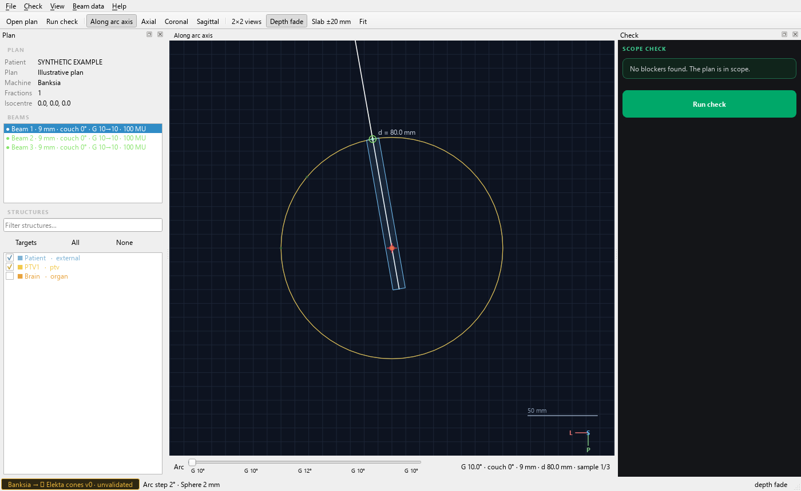

ConeSRS / Medical physics
A second look at
your SRS dose.
An independent dose and monitor-unit check for fixed-cone cranial stereotactic radiosurgery. From exported DICOM to a transparent, per-fraction comparison.
Elekta & Aktina cones · Elekta Versa HD
Keep the geometry and the result together.
A shared workspace. An independent calculation.

Independent by design.
Traceable at every step.
The calculation uses exported treatment data and measured beam factors. It does not use a vendor scripting interface or TPS-reconstructed beam data.
- Read the exported plan
- Match RTPLAN, RTSTRUCT and RTDOSE by their references, then surface the plan’s scope and input checks.
- Recompute the dose
- Combine beam monitor units, reference dose, cone output factors and depth corrections in a measured-data calculation.
- Review the comparison
- Compare dose per fraction at isocentre and export a PDF. Headless batch processing also produces a CSV summary.
Bring your plan.
Use your beam data.
The public build starts with an empty machine configuration. Supply your locally commissioned model before running a check.
Read the setup guideExtract and configure
Extract the Windows ZIP. Copy the example machine mapping and point it to your beam-data JSON.
Open the plan
Launch with
--config machines.json, open an RTPLAN and review the matched structures, dose and preconditions.Run and review
Run the independent check, inspect the comparison and save the PDF report.
Validation belongs with the data.
ConeSRS is provisional software for evaluation. A public release does not establish clinical validation. Commission and independently validate the calculation and your beam models before clinical use. Unvalidated models remain clearly flagged; unsupported plans are rejected.
The beam-data import wizard and desktop batch flow are still in development. Batch processing is available from the command line.